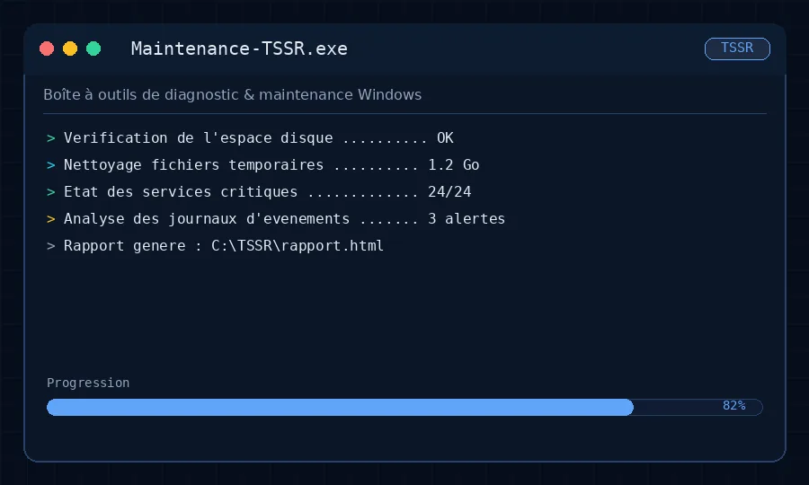
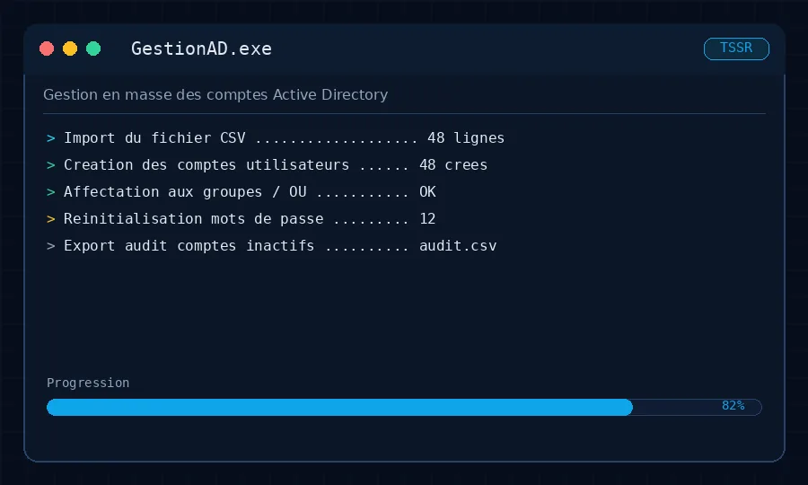
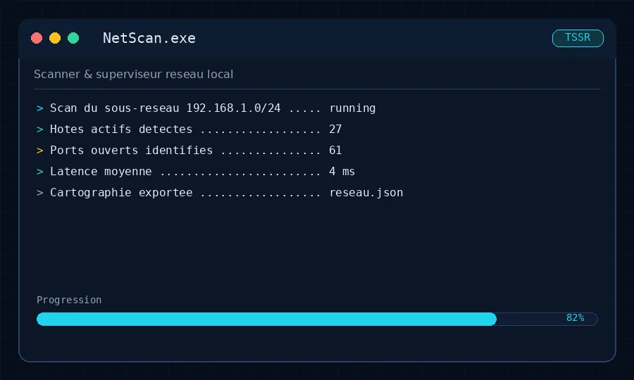
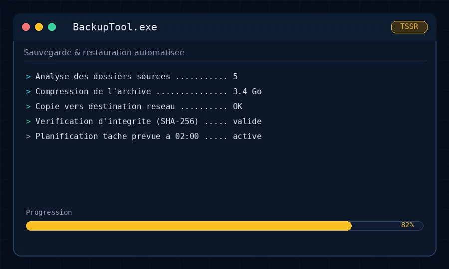
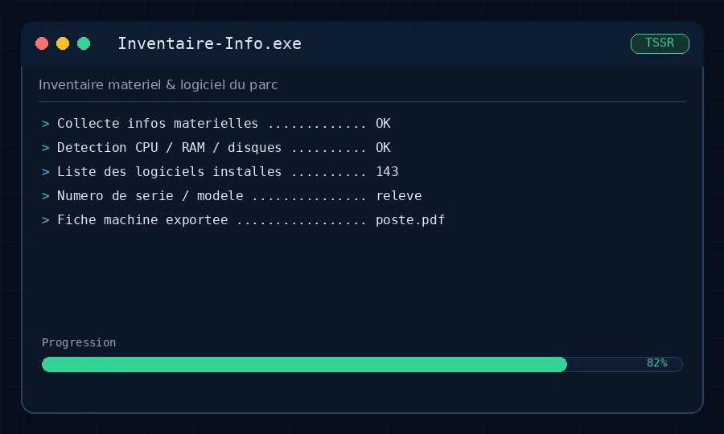
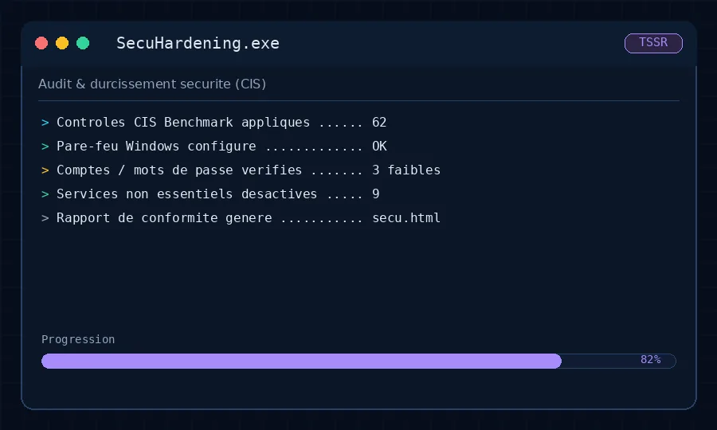

Systèmes
- Windows ServerLV8
- Linux (Debian)LV7
- Active DirectoryLV7
- PowerShellLV6
- Support & dépannageLV8
AD DS · GPO · WSUS · DNS · DHCP
En ligne · Disponible immédiatement
Technicien Supérieur Systèmes & Réseaux
Formé au titre professionnel TSSR niveau 5 chez MODE 83 à Draguignan, je recherche mon premier poste pour administrer, sécuriser et faire tourner vos infrastructures — serveurs, réseaux, virtualisation.
// À propos de moi
Je m'appelle Enzo Bouarab. Je termine ma formation de Technicien Supérieur Systèmes et Réseaux — titre professionnel de niveau 5 reconnu par l'État — au centre MODE 83 à Draguignan, dans le Var.
Ma formation m'a donné des bases solides en administration de serveurs Windows Server et Linux, en configuration réseau (VLAN, routage, VPN, pare-feu), en virtualisation VMware & Hyper-V et en sécurité informatique. Toutes mes compétences viennent de travaux pratiques et de projets réalisés en laboratoire.
Rigoureux, curieux et passionné par l'infrastructure, je cherche mon premier poste en entreprise pour mettre ces compétences en production et contribuer à vos projets réels.
Ce premier poste sera ma première expérience en entreprise : je l'aborde avec une implication totale.
Théorie et pratique acquises chez MODE 83, prêtes à être appliquées dès le premier jour.
Je me forme vite sur de nouveaux outils et m'adapte à l'environnement de votre entreprise.
À l'aise pour collaborer, poser les bonnes questions et communiquer clairement.
Sensibilisé aux bonnes pratiques de sécurité dès la conception des solutions.
// Compétences
Niveaux auto-évalués, développés en formation TSSR chez MODE 83 (sur 10).
AD DS · GPO · WSUS · DNS · DHCP
Cisco · 802.1X · VPN site-à-site
ESXi · CIS Benchmark · SHA-256
// Parcours
Un parcours entièrement tourné vers l'infrastructure. Je recherche ma toute première expérience en entreprise.
— en cours
MODE 83 · Centre de formation · Draguignan (83)
Référentiel TSSR niveau 5 complet : Windows Server (AD DS, GPO, WSUS, DNS, DHCP), Linux Debian, routage, VLAN, VPN site-à-site, virtualisation VMware & Hyper-V, sécurité, supervision Zabbix/Nagios et scripting PowerShell — 100 % en laboratoire.
—
Parcours autodidacte
Fondamentaux IT via Cisco NetAcad, Google IT Support (Coursera) et TryHackMe pour les bases de la cybersécurité. Montage d'un homelab personnel pour expérimenter Linux et la virtualisation.
—
Lycée Jean Moulin · Draguignan (83)
Mention Bien. Projet de terminale : système domotique connecté sur Raspberry Pi, protocole MQTT et interface web de supervision — le déclic pour les systèmes et réseaux.
// Certification
Technicien Supérieur Systèmes & Réseaux (bac+2) · MODE 83 · depuis le 16 mars 2026.
Routeurs et commutateurs, VLAN, DHCP, DNS, VPN site-à-site, Wi-Fi d'entreprise, supervision réseau.
Windows Server et Linux, Active Directory, GPO, scripts PowerShell, gestion des utilisateurs.
Sondes et alertes, PRA/PCA, durcissement des systèmes, sauvegardes et continuité d'activité.
// Projets
Applications PowerShell compilées en exécutables autonomes durant ma formation. Téléchargeables et testables directement sous Windows 10/11, sans installation.

Systèmes · PowerShell → .exe
Boîte à outils de diagnostic Windows : vérification disque, nettoyage des fichiers temporaires, état des services critiques, analyse des journaux et rapport HTML.

Systèmes · Active Directory
Création de comptes en masse depuis un CSV, affectation aux OU et groupes, réinitialisation de mots de passe et audit des comptes inactifs.

Réseau · Supervision
Découverte du réseau local : scan du sous-réseau, hôtes actifs, ports ouverts, latence et export de la cartographie au format JSON.

Sécurité · Sauvegarde / PRA
Sauvegarde et restauration automatisées : compression, copie vers un partage réseau, contrôle d'intégrité SHA-256 et tâche planifiée récurrente.

Systèmes · Inventaire
Inventaire matériel et logiciel : CPU, RAM, disques, n° de série, logiciels installés et fiche machine exportable en PDF.

Sécurité · Durcissement
Audit et durcissement selon le CIS Benchmark : contrôles de sécurité, pare-feu Windows, comptes faibles et rapport de conformité HTML.
// Objectif professionnel
Prêt à apprendre sur le terrain et à apporter mon énergie et mes bases à votre équipe IT.
Je recherche un CDI, un CDD ou une alternance dans une DSI, une ESN, une PME technologique ou une collectivité de la région PACA (Var, Alpes-Maritimes, Bouches-du-Rhône) — idéalement une équipe qui accompagne, fait confiance et cherche quelqu'un de motivé et rigoureux.
Postuler maintenantWindows Server, Linux, AD, GPO, WSUS, gestion des comptes
VLAN, routage, pare-feu, VPN, Wi-Fi entreprise, câblage
Helpdesk N1/N2, ticketing, déploiement de postes, maintenance
Monitoring, sauvegardes, durcissement, documentation
// Contact
Vous cherchez un technicien systèmes & réseaux junior, motivé et opérationnel ? Je réponds sous 24 h.
Téléphone
+33 6 00 00 00 00Localisation
Draguignan, Var (83) — région PACA
Disponibilité
Immédiate · CDI / CDD / alternance